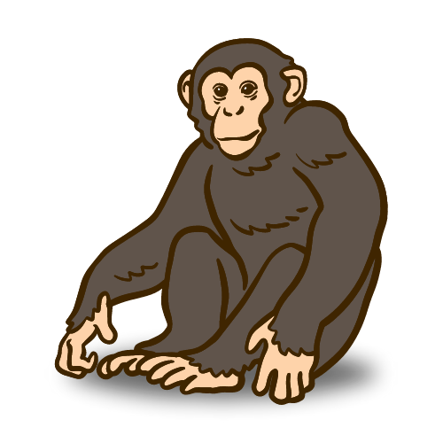
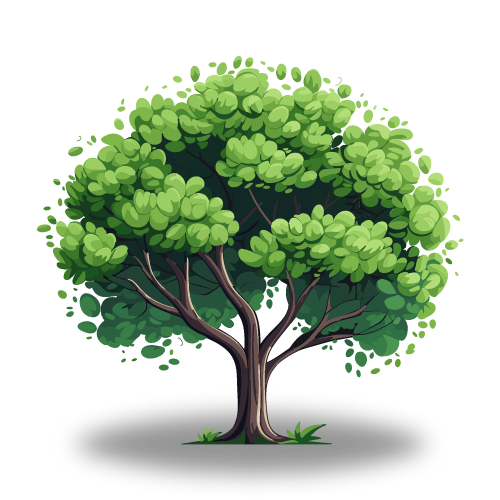
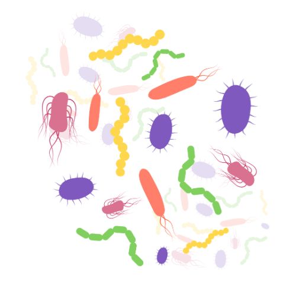

Kingdom Animalia
Animals are multicellular, eukaryotic organisms in the biological kingdom Animalia. With few exceptions, animals consume organic material, breathe oxygen, have myocytes and are able to move, can reproduce sexually, and grow from a hollow sphere of cells, the blastula, during embryonic development.
Even though members of the animal kingdom are incredibly diverse, animals share common features that distinguish them from organisms in other kingdoms. All animals are eukaryotic, multicellular organisms, and almost all animals have specialized tissues. Most animals are motile, at least during certain life stages. Animals require a source of food to grow and develop. All animals are heterotrophic, ingesting living or dead organic matter. This form of obtaining energy distinguishes them from autotrophic organisms, such as most plants, which make their own nutrients through photosynthesis and from fungi that digest their food externally. Animals may be carnivores, herbivores, omnivores, or parasites. Most animals reproduce sexually: The offspring pass through a series of developmental stages that establish a determined body plan, unlike plants, for example, in which the exact shape of the body is indeterminate. The body plan refers to the shape of an animal.

Kingdom Plantae
Plants are the eukaryotes that form the kingdom Plantae; they are predominantly photosynthetic. This means that they obtain their energy from sunlight, using chloroplasts derived from endosymbiosis with cyanobacteria to produce sugars from carbon dioxide and water, using the green pigment chlorophyll.
Plants are a kingdom of life forms that includes familiar organisms such as trees, herbs, bushes, grasses, vines, ferns and mosses. Through photosynthesis, they convert water and carbon dioxide into the oxygen we breathe and the sugars that provide the primary fuel for life. Through nitrogen fixation, plants generate proteins that are basic building blocks of life. Early fossil records of photosynthesizing organisms date from about 3 billion years ago. Plants were instrumental to evolution as a whole in that they produced the oxygen that made life on Earth possible — not only by "breathing" it into the atmosphere and transforming it, but also by crushing rocks with their roots, which created soils and released nutrients on a large scale. Plants are crucial to the existence of all other living creatures on Earth, both through the systemic life-support services they sustain and the food, medicine and other material resources they provide. The total number of described plant species hovers around 250,000.

Kingdom Fungi
Fungi are eukaryotic organisms that include microorganisms such as yeasts, moulds and mushrooms. These organisms are classified under kingdom fungi.
The organisms found in Kingdom fungi contain a cell wall and are omnipresent. They are classified as heterotrophs among the living organisms.
The structure of fungi can be explained in the following points:
Almost all the fungi have a filamentous structure except the yeast cells.
They can be either single-celled or multicellular organisms.
Fungi consist of long thread-like structures known as hyphae. These hyphae together form a mesh-like structure called mycelium.
Fungi possess a cell wall which is made up of chitin and polysaccharides.
The cell wall comprises a protoplast, which is differentiated into other cell parts such as cell membrane, cytoplasm, cell organelles and nuclei.
The nucleus is dense, clear, with chromatin threads. The nucleus is surrounded by a nuclear membrane.